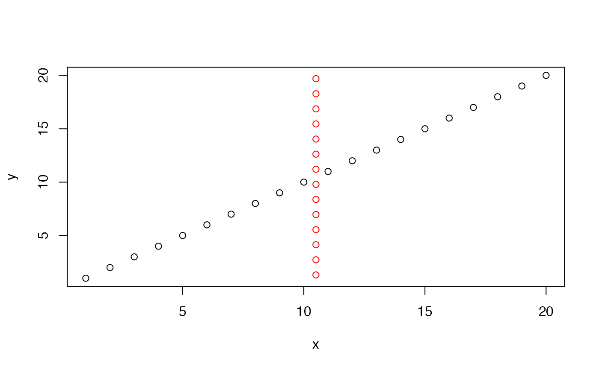

Apply transformations to a set of x, y coordinates
CoordTransform.RdApply transformations to a set of x, y coordinates
Usage
CoordTransform(
xy_coords,
angle = 0,
center = NULL,
xy_offset = c(0, 0),
scalefactor = 1
)Arguments
- xy_coords
A
matrix,data.frameortibbleobject with numeric x, y coordinates.- angle
Numeric value specifying the degree of rotation. Use negative angles for counter-clockwise rotation. The value needs to be in the range (-360, 360)
- center
Optional point (x, y) specifying the center of rotation.
- xy_offset
Optional point (x, y) specifying the translation.
- scalefactor
A numeric value specifying a scaling factor between (0, 3)
Details
The coordinate system for xy_coords should match the dimensions of the
image. In other words, the coordinates should map spots to the tissue section on H&E image.
Translations and rotations are done by multiplying xy_coords with the following
transformation matrix \(T_{final}\) as described below:
\(T(-x, -y)\): Translate coordinates to origin, i.e. (0, 0) becomes the new center
1 0 \(-center_{x}\) 0 1 \(-center_{y}\) 0 0 1 \(R\): Rotate coordinates around origin
\(cos(\alpha)\) \(-sin(\alpha)\) 0 \(sin(\alpha)\) \(cos(\alpha)\) 0 0 0 1 \(T(x, y)\): Translate coordinates back to center, or optionally to center + an
xy_offset1 0 \(center_{x} + offset_{x}\) 0 1 \(center_{y} + offset_{y}\) 0 0 1
Then, these matrices are combined to form the final transformation matrix:
\(T_{final} = T(x, y)*R*T(-x, -y)\)
Which can be used to transform our input coordinates:
\(xy_{out} = T_{final}*xy_{in}\)
The scaling is handled separated after the translations and rotations.
See also
Other transforms:
CoordAndImageTransform(),
CoordMirror(),
ImageTranslate(),
RigidTransformImages(),
RunAlignment()
Examples
# Create a data.frame with x, y coordinates
xy <- data.frame(x = 1:20, y = 1:20)
# Rotate coordinates 45 degrees clockwise around the center
xy_rotated <- CoordTransform(xy, angle = 45)
plot(xy)
points(xy_rotated, col = "red")
